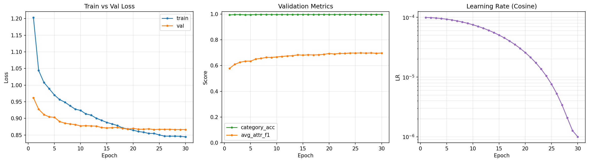
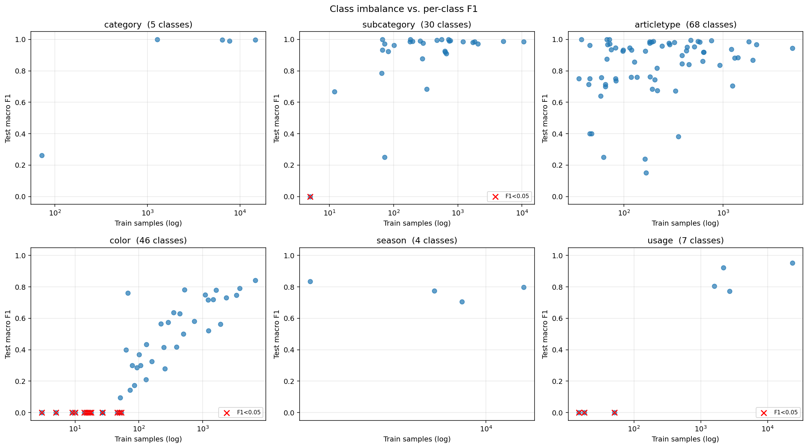
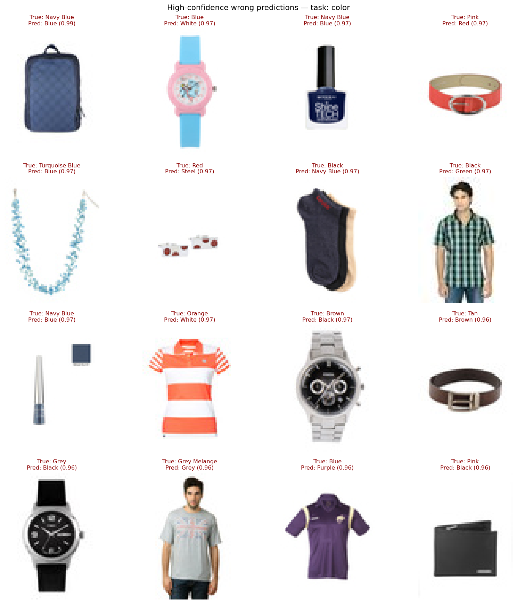
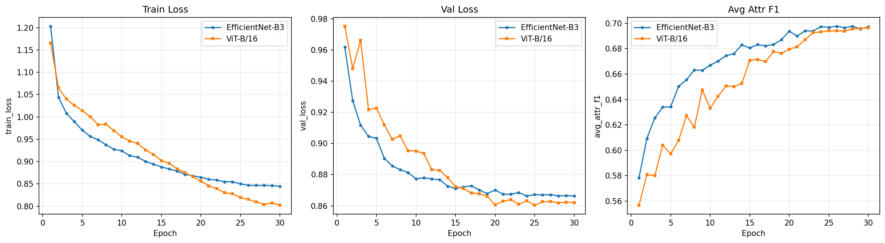

백본만 다르고 나머지 모든 설정은 동일하게 하여 성능 차이가 오직 아키텍처에서 비롯되도록 설계하였다.
결과
Test 메트릭 (best 모델 기준)
Metric
EfficientNet-B3
ViT-B/16
우위
best_epoch
26
30
—
Category Accuracy
0.9944
0.9941
EffNet
Category Macro F1
0.8492
0.8689
ViT
SubCategory F1
0.9182
0.8834
EffNet
ArticleType F1
0.8280
0.8246
EffNet
Color F1
0.3713
0.4009
ViT
Season F1
0.7790
0.7906
ViT
Usage F1
0.4931
0.4910
EffNet
Avg Attribute F1
0.6779
0.6781
ViT (+0.0002)
태스크 우위가 정확히 3:3으로 갈렸고, 평균 차이는 0.03%p에 불과하다.
학습 곡선

EfficientNet-B3 — train/val loss · validation 메트릭 · cosine LR 스케줄
태스크별 F1 (EfficientNet-B3)
Category는 거의 포화. Color와 Usage가 약한 태스크
인사이트
클래스 불균형이 클래스별 F1을 직접 결정한다

X축: 클래스별 학습 샘플 수 (log) · Y축: 클래스별 test macro F1 · 빨간 × 표시는 F1 < 0.05.
color 산점도에서 패턴이 명확히 드러난다. 학습 샘플 50개 미만인 12개 클래스가 모두 F1 ≈ 0으로 수렴하였으며,
동일한 패턴이 usage 태스크에서도 관찰된다 (Party 18개, Travel 15개 학습 샘플).
학습 데이터가 충분한 클래스에서는 모델 성능이 안정적이지만, 데이터가 부족한 클래스에서는 어떠한 아키텍처 변경으로도 보완할 수 없음을 시사한다.
EfficientNet과 ViT의 avg_attr_f1 차이가 0.0002에 불과하다.
백본 아키텍처가 결정 요인이라면 파라미터 8배 증가(10.94M → 85.92M)에 따른 유의미한 성능 차이가 관측되어야 한다.
color 태스크의 성능 저하가 두 백본에서 동일하게 관측된다 (0.37 vs 0.40).
아키텍처 변경만으로 해당 약점이 해소되지 않음을 확인할 수 있다.
혼동 패턴도 라벨 모호성을 뒷받침한다

Color 태스크에서 confidence는 높은데 틀린 케이스들. 대부분 사람이 봐도 헷갈리는 쌍 (Beige vs Cream, Off White vs White) — label noise의 벽
모델 비교 — CNN vs Transformer

두 모델의 학습 곡선 overlay. 파라미터가 8배 많은 ViT도 val loss는 EffNet과 거의 똑같이 흘러간다.태스크별 F1 비교. ViT는 color와 category 같은 전역 패턴 인식에서, EffNet은 형태 기반 subcategory에서 미세 우위. 평균 차이는 노이즈 수준이다.
미세 차이에 대한 가설
EffNet이 subcategory에서 우위 (+0.035) — CNN의 local feature가 의류 형태 인식에 유리.
ViT가 color (+0.030), category_f1 (+0.020)에서 우위 — Transformer의 global self-attention이 색감이나 카테고리처럼 전역적 패턴에 유리.
최종 모델 선택 : EfficientNet-B3
성능은 동등하면서 파라미터는 1/8 수준이며, 학습 및 추론 속도에서도 우위에 있다.
본 데이터셋에서 ViT의 추가 capacity가 일반화 성능 향상으로 이어지지 않은 만큼,
실용성 관점에서 EfficientNet이 더 적합한 선택이다.
일반화 갭 — Inference 재평가
best_val_metrics(학습 중 best 시점의 val 결과)와 test_metrics(보류된 test set 결과)를 비교했다.
Metric
EffNet (val→test)
ViT (val→test)
해석
avg_attr_f1
-0.0198
-0.0184
두 모델 갭 거의 동일
usage_f1
-0.0795 ⚠️
-0.0827 ⚠️
둘 다 불안정 (Party 18, Travel 15)
category_f1
+0.0105
+0.0261
test가 val보다 높음 — overfit이 아니라 split 분산
두 모델의 일반화 갭이 거의 동일하다.
백본이 robustness에 영향을 미친다면 capacity가 8배 큰 ViT에서 더 큰 overfitting 혹은 더 우수한 일반화가 관측되어야 하나,
두 양상 모두 나타나지 않았다. 변동의 주된 원인은 데이터, 특히 소수 클래스 태스크의 분포 불안정성에 있는 것을 확인했다.
엔지니어링 노트
단일 출처 원칙(Single Source of Truth).1_utils.TASK_KEYS가 6-태스크 명세를 정의하고, 2_preprocess.COLUMN_TO_TASK가 CSV 컬럼과 모델 키의 매핑을 담당한다. 모델·loss·dataset·trainer 모두 동일한 출처를 참조하여 문자열 중복 정의를 제거하였으며, 오타 발생 시 즉시 KeyError로 실패하도록 설계해 디버깅 효율을 확보하였다.
모듈화된 파이프라인. 1~7번 파일(utils → preprocess → dataset → model → loss → scheduler → trainer)과 main.py로 책임을 분리하여, 각 모듈의 독립적 테스트가 가능하다.